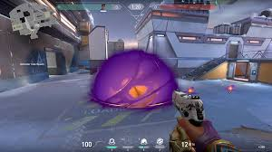
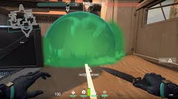

"Valorant" Versi 7.08 Bawa Kemampuan "Smoke" yang Lebih Canggih
ditulis oleh Fauzan Nur pada tangal 23 Januuari 2023
Riot Games merilis pembaruan (update) patch versi 7.08 untuk game shooter bikinannya, Valorant. Update versi 7.08 ini menghadirkan perubahan penting untuk kemampuan (skill) Smoke, peningkatan untuk audio serta mode Premier, dan lain sebagainya.
 Untuk diketahui, Smoke adalah kemampuan mengeluarkan asap yang digunakan untuk mengontrol peta (map) dalam permainan.Dengan Smoke, pemain bisa membatasi penglihatan musuh, misalnya, ketika ingin memasuki situs bom (spike) sebagai tim penyerang (Attacker). Smoke akan menghilang dalam beberapa detik, tergantung karakter alias agen yang digunakan pemain.Dalam update kali ini, Smoke dirancang agar bisa mengeluarkan bunyi dan menampilkan efek visual, sekitar 1,5 detik sebelum menghilang. Efek visual yang dimaksud menyerupai serpihan putih yang menyelimuti Smoke.Dengan demikian, penggunaan Smoke bisa dikatakan lebih mudah, karena pemain tidak perlu lagi menghafal durasi Smoke setiap agen.
Tampilan Smoke baru Valorant yang akan mengeluarkan indikator audio dan visual, sekitar 1,5 detik sebelum menghilang. Perubahan Smoke ini diperkenalkan di update7.08
Begitu muncul indikator suara dan visual, pemain langsung bisa mengatur strategi, contohnya untuk push Smoke yang hilang dan melakukan serangan agresif.Yang perlu dicatat, perubahan Smoke ini hanya berlaku untuk agen Astra, Brimstone, dan Omen. Agen lainnya seperti Viper dan Jett tidak terdampak.Selain Smoke, patch 7.08 membuat pengalaman audio Valorant menjadi lebih konsisten. Kini, audio saat pemain mengganti kemampuan tidak bisa didengar oleh rekan tim.Hal ini sebelumnya memang membuat pemain Valorant bingung. Sebab, rekan tim bisa mendengarkan indikator audio ketika pengguna mengganti skill, tetapi tidak bisa mendengar audio ketika pengguna mengganti senjata.Pengalaman audio yang tidak konsisten ini membuat pemain bertanya-tanya, apakah indikator audio tersebut bisa didengar oleh musuh atau tidak. Dengan perubahan ini, Riot berharap pengguna bisa lebih mudah membedakan apa saja indikator audio yang diketahui musuh.
sumber
https://tekno.kompas.com/read/2023/10/25/18030017/-valorant-versi-7.08-bawa-kemampuan-smoke-yang-lebih-canggih?page=all#page2